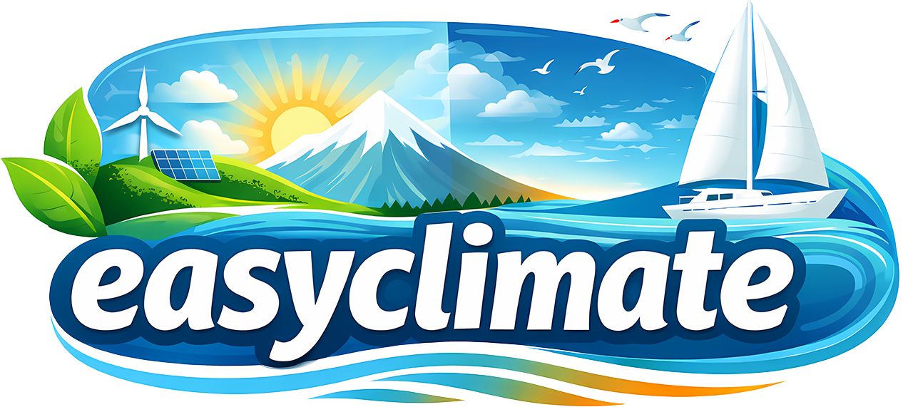

¶
A line of code to analyze climate
Trying to make it easily without complicated writing code?
Easy Climate is just here to help you!
You can directly install it via pip by using 🛒
$ pip install easyclimate
Caution
🚨 This package is still undergoing rapid development. 🚨
All of the API (functions/classes/interfaces) is subject to change. There may be non-backward compatible changes as we experiment with new design ideas and implement new features. This is not a finished product, use with caution.